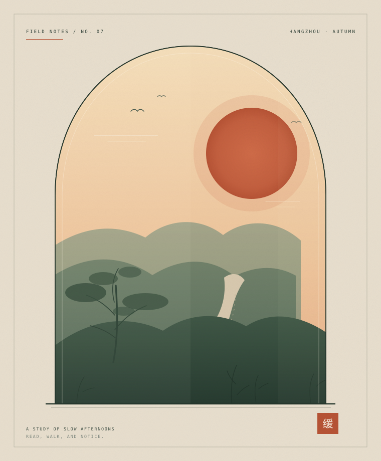

慢，是一种需要练习的能力
我们总以为慢下来是休息，其实它更像一门手艺：需要反复练习，才会在加速的世界里保持自己的节奏。
Waveadwake 的个人博客 · EST. 2022
这里收藏我关于设计、代码与日常生活的长信。不追赶热点，只记录那些经过时间之后，仍然想说出口的事。

01 / 精选文章
我们总以为慢下来是休息，其实它更像一门手艺：需要反复练习，才会在加速的世界里保持自己的节奏。
在别人的广场上住了太久，我想重新拥有一块可以自己决定如何生长的地方。
放弃“读完”的执念之后，读书反而变成了一件可以长久做下去的事。
02 / 关于这个地方
我相信文字有自己的速度。它不适合追赶，更适合坐下来，把一杯茶放凉。这个博客没有算法推荐，也不计算停留时长，它只是一间安静的房间，门开着，你随时可以来。
关于我，以及这里— Waveadwake，写于杭州
03 / 最近在想
把手机留在客厅，去厨房慢慢切一只柿子。原来“专注”并不需要仪式感，它只需要你愿意在一件小事上多停留三分钟。
重读《山茶文具店》。比起那些漂亮的句子，我更喜欢书中的人认真挑选一支笔、一张纸的样子。郑重其事，本身就是一种温柔。
给窗台的薄荷换了一个更大的盆。植物好像比人更早知道：所谓成长，有时只是需要多一点空间，以及不被打扰的时间。